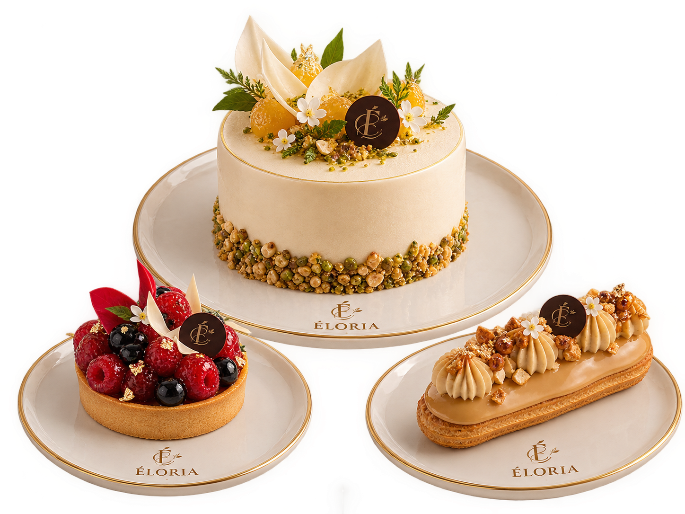
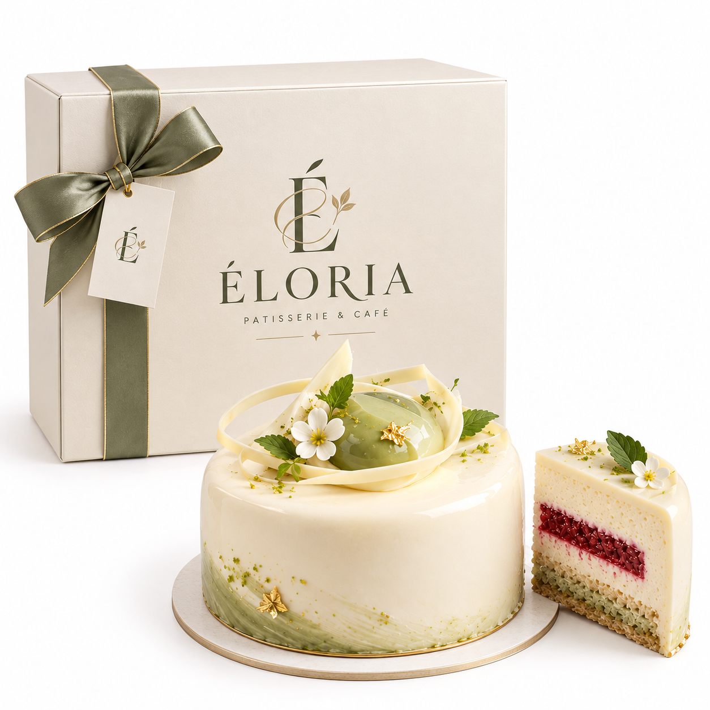
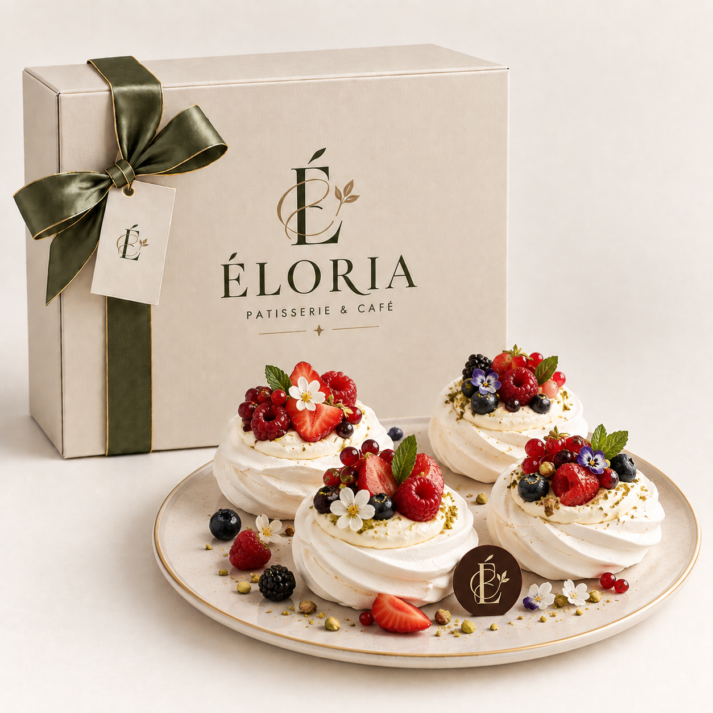

.png) 01
01
Mont Blanc Rose
Рожевий Монблан
Каштановий крем-пате з нотами коньяку, соковита чорна смородина та ніжний мус із дамаської троянди на мигдалевій основі.
3600 ₴
Вишукана колекція авторських десертів ÉLORIA, створених із преміальних інгредієнтів та увагою до кожної деталі.

01
Рожевий Монблан
Каштановий крем-пате з нотами коньяку, соковита чорна смородина та ніжний мус із дамаської троянди на мигдалевій основі.
.png) 02
02
Затемнена Опера
Класичне прочитання з тонкими мигдалевими коржами Joconde, насиченим ганашем із гіркого какао та кавовим крем-брюле.
.png) 03
03
Симфонія Інжиру та Розмарину
Карамелізований свіжий інжир у поєднанні з мусом із козячого вершкового сиру та тонкою нотою розмарину на коржі Сабле.

01Сен-Жермен
Мусовий торт із бергамоту, білого французького шоколаду та прошарком із лісової суниці.
.png) 02
02
Оксамитова Черешня
Ніжний ванільно-бісквітний торт із кулі зі стиглої черешні та кремом із бурбонської ванілі.
.png) 03
03
Фісташка та Флердоранж
Фісташковий бісквіт із хрустким праліне, мусом із сицилійської фісташки та ароматом квітів апельсина.

01Міні-Павлова
Невагоме безе з хрусткою скоринкою, ніжним вершковим центром та свіжими сезонними ягодами.
.png) 02
02
Шафранова Груша
Міні-сфери з груші в сиропі з іранським шафраном, кремом із білого шоколаду та мигдалевою крихтою.
.png) 03
03
Колекція Макаронів
Колекція макаронів із вишуканими смаками: чорний трюфель, дорблю-груша, малина-роза та матча-лайм.
.png) 04
04
Канеле Бордо
Традиційна хрустка карамелізована скоринка, ніжне заварне серце з ароматом рому та натуральної ванілі.
.png) 05
05
Шу з фісташкою
Повітряні тістечка шу з хрустким кракеліном та шовковистим кремом із сицилійської фісташки.
 06
06
Червоний Діамант
Мікро-десерт у формі огранованого каменя з вишневою глазур’ю та рідкою серцевиною з вишні.
.png) 07
07
Мадлен Роза-Малина
Традиційне бісквітне печиво з ароматом дамаської троянди, малиновим кулі та рожевою глазур’ю.
.png) 08
08
Міні-Мільфей
Карамелізоване листкове тісто з кремом дипломат із сицилійської фісташки та мадагаскарської ванілі.
.png) 01
01
Абрикосово-Розмариновий Тарт
Хрустке пісочне тісто з лавандовим франжипаном, соковитим абрикосом та свіжим розмарином.
.png) 02
02
Тарт із Грушею та Рокфором
Горіхова пісочна основа з карамелізованою грушею, сиром Roquefort та листочками чебрецю.
.png) 03
03
Яблучний Тарт
Хрустке листкове тісто на паленому маслі з яблуками Гренні Сміт, каштановим медом і кальвадосом.
.png) 04
04
Тартлетка Юдзу-Меренга
Пісочна основа Сабле, освіжаючий курд із юдзу та обпалена шовковиста меренга.
.png) 05
05
Чорничний Франжипан
Пісочний тарт із мигдалевим кремом Франжипан, амаретто та дикою карпатською чорницею.
.png) 06
06
Тарт Ревінь-Полуниця
Мигдалева основа з томленим ревенем, лісовою полуницею та прозорою ягідною глазур’ю.
.png) 01
01
Еклер Каштан-Какао
Заварне тісто з кракеліном, кремом із каштанового пате та темним шоколадом.
.png) 02
02
Рожева Ґуава & Баскський Перець
Мус із рожевої ґуави, серцевина з червоного апельсина та легкий акорд перцю Еспелет.
.png) 03
03
Манго & Маракуйя
Тропічний мус із маракуйї, центр зі стиглого манго та кокосовий бісквіт Dacquoise.
.png) 04
04
Матча & Флердоранж
Мус із церемоніальної японської матчі, гелеве серце з апельсинового цвіту та хрусткий кунжут.
.png) 05
05
Ванільна Хмара
Порційний мусовий десерт із мадагаскарською ваніллю та рідким центром із солоної карамелі.
.png) 06
06
Грейпфрут & Троянда
Мус із білого шоколаду та дамаської троянди, соковитий рожевий грейпфрут і хрустке сабле.
.png) 07
07
Ожина & Шампанське
Мус на основі ігристого вина, начинка з лісової ожини та бісквіт із цедрою бергамоту.
.png) 08
08
Сонячний Цитрус & Естрагон
Мус із рожевого грейпфрута, лимонний курд з естрагоном та соковитий бісквіт із маком.
Ознайомтеся з нашою колекцією та виберіть позиції, що відповідають стилю вашої події.
Укажіть побажання щодо смакового профілю, персонального декору та розміру.
Узгодьте фінальну концепцію та зручний спосіб оплати з нашим менеджером.
Оберіть делікатну персональну доставку або самовивіз у зручний для вас час.